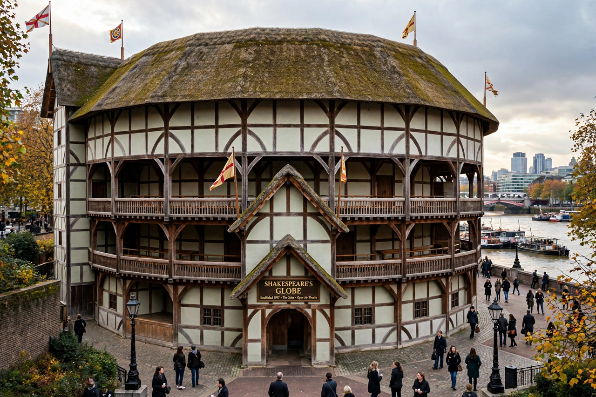

English Renaissance theatre
English Renaissance theatre, also known as Renaissance English theatre and Elizabethan theatre, refers to the theatre of England between 1558 and 1642 — the period of the first permanent public playhouses, of Christopher Marlowe, William Shakespeare and Ben Jonson, and of drama written largely in blank verse. It ended when the Puritan Long Parliament ordered the closing of the theatres at the outbreak of the English Civil War.

Playhouses
The first purpose-built public playhouse, The Theatre, was erected in Shoreditch in 1576 by James Burbage. It was followed by the Curtain, the Rose, the Swan and most famously the Globe (1599), home of Shakespeare's company, the Lord Chamberlain's Men (later the King's Men). Open-air "public" theatres held up to 3,000 spectators, while smaller indoor "private" theatres such as Blackfriars charged higher prices. Plays were performed in daylight, in repertory, with minimal scenery; female roles were played by boys.
Companies and playwrights
Acting companies were organised as shareholders under aristocratic patronage. Leading playwrights included Marlowe (Tamburlaine, Doctor Faustus), Shakespeare, Jonson, Thomas Kyd (The Spanish Tragedy), John Webster, Thomas Middleton and, in the Jacobean and Caroline years, Francis Beaumont and John Fletcher. Revenge tragedy, chronicle history plays, city comedy and court masques flourished alongside one another.
Closure and legacy
Parliament's ordinance of 2 September 1642 suspended stage plays as unseemly during civil war; the ban lasted until the Restoration of 1660, when theatres reopened with actresses and movable scenery. The surviving play texts — many preserved in the 1623 First Folio of Shakespeare — remain the foundation of the English-language theatrical canon.